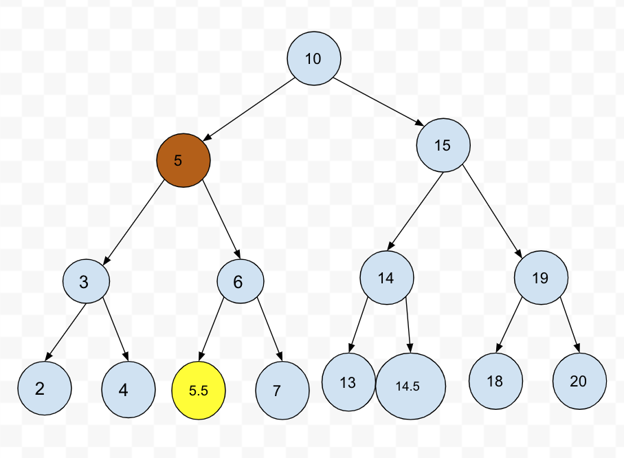
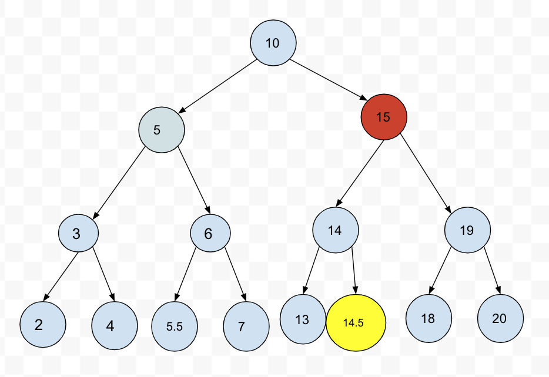

트리(Tree)
![Github logo]() Edit on GitHub
Edit on GitHub1. 트리 (Tree) 구조
- 트리: Node와 Branch를 이용해서, 사이클을 이루지 않도록 구성한 데이터 구조
- 실제로 어디에 많이 사용되나?
- 트리 중 이진 트리 (Binary Tree) 형태의 구조로, 탐색(검색) 알고리즘 구현을 위해 많이 사용됨
2. 알아둘 용어
- Node: 트리에서 데이터를 저장하는 기본 요소 (데이터와 다른 연결된 노드에 대한
Branch정보 포함) - Branch: 아래이미지를 보면 가지처럼 뻗어나가는 부분으로 데이터와 다른 노드를 연결시키는 부분을 브랜치라고한다
- Root Node: 트리 맨 위에 있는 노드
- Level: 최상위 노드를 Level 0으로 하였을 때, 하위 Branch로 연결된 노드의 깊이를 나타냄
- Parent Node: 어떤 노드의 다음 레벨에 연결된 노드
- Child Node: 어떤 노드의 상위 레벨에 연결된 노드
- Leaf Node (Terminal Node): Child Node가 하나도 없는 노드
- Sibling (Brother Node): 동일한 Parent Node를 가진 노드
- Depth: 트리에서 Node가 가질 수 있는 최대 Level

3. 이진 트리와 이진 탐색 트리 (Binary Search Tree)
- 이진 트리: 노드의 최대 Branch가 2인 트리
- 이진 탐색 트리 (Binary Search Tree, BST): 이진 트리에 다음과 같은 추가적인 조건이 있는 트리
- 왼쪽 노드는 해당 노드보다 작은 값, 오른쪽 노드는 해당 노드보다 큰 값을 가지고 있음!

4. 자료 구조 이진 탐색 트리의 장점과 주요 용도
- 주요 용도: 데이터 검색(탐색)
- 장점: 탐색 속도를 개선할 수 있음
단점은 이진 탐색 트리 알고리즘 이해 후에 살펴보기로 함
이진트리와 정렬된 배열간의 탐색 비교

5. 파이썬 객체지향 프로그래밍으로 링크드 리스트 구현하기
5.1. 노드 클래스 만들기
class Node:# 이진 탐색트리는 왼쪽, 오른쪽 최대 2개의 노드와 연결되기 때문에 아래와같이 left, right로 나눈다def __init__(self, value):self.value = valueself.left = Noneself.right = None
5.2. 이진 탐색 트리에 데이터 넣기
- 이진 탐색 트리 조건에 부합하게 데이터를 넣어야 함
class NodeMgmt:# 트리를 처음 만들때 노드를 넣도록 constructor를 만드는데, 넣어준 노드가 루트노드가된다.def __init__(self, head):self.head = head# 값을 넣는 것def insert(self, value):# 노드를 순회해야되기때문에 루트 노드를 먼저 저장한다self.current_node = self.head# 트리에 넣을 값이 루트 노드의 값보다 작다면 왼쪽에 브랜치에 들어감while True:if value < self.current_node.value:# 루트 노드의 왼쪽 브랜치랑 연결된 노드가 있다면 current_node가 left 노드가 됨if self.current_node.left != None:# 이렇게 current노드에 왼쪽 노드를 넣어주면 다시 while문이 돌면서 계속 순회하게됨self.current_node = self.current_node.leftelse:# 만약 루트 노드의 왼쪽 브랜치에 연결된 노드가 없다면 왼쪽 브랜치에 새 노드를 생성하고 while문을 멈춤self.current_node.left = Node(value)breakelse:# 만약 트리에 넣은값이 루트 노드의 값보다 크다면 오른쪽 브랜치에 들어감if self.current_node.right != None:# 만약 루트 노드의 오른쪽 브랜치에 연결된 노드가 있다면 그 노드가 current 노드가 됨self.current_node = self.current_node.rightelse:# 루트 노드의 오른쪽 브랜치에 연결되 노드가 없다면 새로운 노드를 생성하여 넣어줌self.current_node.right = Node(value)breakhead = Node(3)BST = NodeMgmt(head)BST.insert(2)BST.insert(4)
5.3. 이진 탐색 트리 탐색
class Node:# 이진 탐색트리는 왼쪽, 오른쪽 최대 2개의 노드와 연결되기 때문에 아래와같이 left, right로 나눈다def __init__(self, value):self.value = valueself.left = Noneself.right = Noneclass NodeMgmt:# 트리를 처음 만들때 노드를 넣도록 constructor를 만드는데, 넣어준 노드가 루트노드가된다.def __init__(self, head):self.head = head# 값을 넣는 것def insert(self, value):# 노드를 순회해야되기때문에 루트 노드를 먼저 저장한다self.current_node = self.head# 트리에 넣을 값이 루트 노드의 값보다 작다면 왼쪽에 브랜치에 들어감while True:if value < self.current_node.value:# 루트 노드의 왼쪽 브랜치랑 연결된 노드가 있다면 current_node가 left 노드가 됨if self.current_node.left != None:# 이렇게 current노드에 왼쪽 노드를 넣어주면 다시 while문이 돌면서 계속 순회하게됨self.current_node = self.current_node.leftelse:# 만약 루트 노드의 왼쪽 브랜치에 연결된 노드가 없다면 왼쪽 브랜치에 새 노드를 생성하고 while문을 멈춤self.current_node.left = Node(value)breakelse:# 만약 트리에 넣은값이 루트 노드의 값보다 크다면 오른쪽 브랜치에 들어감if self.current_node.right != None:# 만약 루트 노드의 오른쪽 브랜치에 연결된 노드가 있다면 그 노드가 current 노드가 됨self.current_node = self.current_node.rightelse:# 루트 노드의 오른쪽 브랜치에 연결되 노드가 없다면 새로운 노드를 생성하여 넣어줌self.current_node.right = Node(value)break# 검색했을때 해당값이 있으면 True를 반환def search(self, value):self.current_node = self.head# self.current_node가 None이 되면 while구문 종료while self.current_node:if self.current_node.value == value:return True# 검색할 값이 루트노드 값보다 작다면 current 노드에 왼쪽 노드를 넣어줌elif value < self.current_node.value:self.current_node = self.current_node.leftelse:self.current_node = self.current_node.right# 여기까지 왔다는 것은 while문이 끝났다는 의미고 그 의미는 이진탐색트리에 그 값은 존재하지 않는다는 것# 따라서 반환되는 값은 False이다return Falsehead = Node(3)BST = NodeMgmt(head)BST.insert(2)BST.insert(4)print(BST.search(2), BST.search(4), BST.search(5))True True False
5.4. 이진 탐색 트리 삭제
- 매우 복잡함. 경우를 나누어서 이해하는 것이 좋음
5.4.1. Leaf Node 삭제
- Leaf Node(맨 마지막에 있는 노드): Child Node 가 없는 Node
- 삭제할 Node의 Parent Node가 삭제할 Node를 가리키지 않도록 한다.
- 삭제할 노드를 삭제한 다음 그 부모 노드의 Branch를 None으로 만들어줘야한다

5.4.2. Child Node 가 하나인 Node 삭제
- 삭제할 Node의 Parent Node가 삭제할 Node의 Child Node를 가리키도록 한다.

5.4.3. Child Node 가 두 개인 Node 삭제
- 삭제할 Node의 오른쪽 자식 중, 가장 작은 값을 삭제할 Node의 Parent Node가 가리키도록 한다.
위의 이미지를 보면 갈색 동그라미 노드를 삭제한다고 했을때 해당 노드의
오른쪽 노드의 가장 작은 값의 노드, 삭제노드의 오른쪽 노드 기준 맨 왼쪽의 노드(노란 동그라미)를
삭제노드의 위치에 놓으면 이진탐색트리 규칙에도 벗어나지 않을 수 있다. - 삭제할 Node의 왼쪽 자식 중, 가장 큰 값을 삭제할 Node의 Parent Node가 가리키도록 한다.

갈색 동그라미 노드를 삭제한다고 했을때 삭제할 노드 왼쪽 노드의 제일 큰 값(노란 동그라미)을
삭제 노드의 위치에 놓는다
5.4.3.1. 삭제할 Node의 오른쪽 자식중, 가장 작은 값을 삭제할 Node의 Parent Node가 가리키게 할 경우
- 삭제할 Node의 오른쪽 자식 선택
- 오른쪽 자식의 가장 왼쪽에 있는 Node를 선택
- 해당 Node를 삭제할 Node의 Parent Node의 왼쪽 Branch가 가리키게 함
- 해당 Node의 왼쪽 Branch가 삭제할 Node의 왼쪽 Child Node를 가리키게 함
- 해당 Node의 오른쪽 Branch가 삭제할 Node의 오른쪽 Child Node를 가리키게 함
- 만약 해당 Node가 오른쪽 Child Node를 가지고 있었을 경우에는, 해당 Node의 본래 Parent Node의 왼쪽 Branch가 해당 오른쪽 Child Node를 가리키게 함
5.5. 이진 탐색 트리 삭제 코드 구현과 분석
5.5.1 삭제할 Node 탐색
- 삭제할 Node가 없는 경우도 처리해야 함
- 이를 위해 삭제할 Node가 없는 경우는 False를 리턴하고, 함수를 종료 시킴
# 노드 삭제def delete(self, value):# 먼저 해당 값이 있는지 탐색부터 해야함. 왜냐하면 해당값이 없다면 노드를 삭제할 필요가 없기 때문# searched는 이 노드가 있다 없다를 판단할 기준이됨searched = False# current_node는 삭제할 노드 가리킴self.current_node = self.head# 삭제할 노드의 parent 노드를 가리킴self.parent_node = self.headwhile self.current_node:if self.current_node == value:searched = Truebreakelif value < self.current_node:# 삭제할 값이 current 노드보다 작다면 왼쪽 브랜치이기 때문에 왼쪽 브랜치의 노드를 parent에 넣어줌self.parent_node = self.current_node# current 노드는 이제 왼쪽 브랜치의 노드로 이동하기 때문에 current 노드의 왼쪽 브랜치가됨self.current_node = self.current_node.leftelse:# 삭제할 값이 current 노드보다 크다면 오른쪽브랜치이기 때문에 오른쪽 브랜치의 노드를 parent에 넣어줌self.parent = self.parent_nodeself.current_node = self.current_node.right# 위의 while구문을 빠져나왔다면 삭제할값이 트리에 존재하지 않기 때문에 이 함수를 종료시켜야한다if searched == False:return False# 이후부터 Case 별로 분리해서 코드를 작성
5.5.2. Case2: 삭제할 Node가 Child Node를 한 개 가지고 있을 경우

# Case별로 하기 이전에, 이미 위에서 삭제할노드가 있는지 확인하는 과정에서# self.current_node는 삭제할 노드를 가리키고 있을 것이고,# self.parent는 삭제할 노드(self.current_node)의 부모 노드를 가리키고 있다는 것을 생각하고 가야한다.# 노드가 leaf Node일 때, 삭제할노드의 왼쪽, 오른쪽 브랜치가 없는 경우가 된다.if self.current_node.left == None and self.current_node.right == None:# 삭제할값이 부모노드의 값보다 작다면 왼쪽 브랜치를 끊으면된다.if value < self.parent_node.value:self.parent.left = Noneelse:self.parent.right = None# 마지막으로 해당 노드를 지운다del self.current_node# 삭제할 노드가 하나의 브랜치만 가지고 있는경우 - 삭제할 노드의 왼쪽 브랜치가 존재하는 경우(삭제할 값이 부모 노드값보다 작음)if self.current_node.left != None and self.current_ndoe.right == None:# 삭제할 노드의 부모노드 보다 값이 작다면if value < self.parent.value:# 삭제할노드의 부모노드의 왼 쪽 브랜치는 삭제할 노드의 자식 노드를 가리켜야됨self.parent.left = self.current_node.leftelse:# 삭제할 노드의 부모노드 보다 값이 크다면self.parent.right = self.current_node.left# 삭제할 노드가 하나의 브랜치만 가지고 있는경우 - 삭제할 노드의 오른쪽 브랜치가 존재하는 경우(삭제할 값이 부모 노드값보다 큰 경우)elif self.current_node.left == None and self.current_node.right != None:if value < self.parent.value:# 삭제할 값이 부모 노드의 값보다 작기 때문에 왼쪽 브랜치에 삭제할 브랜치의 오른쪽 노드를 연결self.parent.left = self.current_node.rightelse:self.parent.right = self.current_node.right
5.5.3. Case3-1: 삭제할 Node가 Child Node를 두 개 가지고 있을 경우 (삭제할 Node가 Parent Node 왼쪽에 있을 때)
- 기본 사용 가능 전략
- 삭제할 Node의 오른쪽 자식 중, 가장 작은 값을 삭제할 Node의 Parent Node가 가리키도록 한다.
- 삭제할 Node의 왼쪽 자식 중, 가장 큰 값을 삭제할 Node의 Parent Node가 가리키도록 한다.
- 기본 사용 가능 전략 중, 1번 전략을 사용하여 코드를 구현하기로 함
- 경우의 수가 또다시 두가지가 있음
- Case3-1-1: 삭제할 Node가 Parent Node의 왼쪽에 있고, 삭제할 Node의 오른쪽 자식 중, 가장 작은 값을 가진 Node의 Child Node가 없을 때
- Case3-1-2: 삭제할 Node가 Parent Node의 왼쪽에 있고, 삭제할 Node의 오른쪽 자식 중, 가장 작은 값을 가진 Node의 오른쪽에 Child Node가 있을 때
- 가장 작은 값을 가진 Node의 Child Node가 왼쪽에 있을 경우는 없음, 왜냐하면 왼쪽 Node가 있다는 것은 해당 Node보다 더 작은 값을 가진 Node가 있다는 뜻이기 때문임
- 경우의 수가 또다시 두가지가 있음

# 삭제할 노드가 child노드를 2개의 브랜치 다 갖고 있는 경우if self.current_node.left != None and self.current_node.right != None:# 삭제할 노드가 왼쪽(삭제할 노드가 부모 노드보다 값이 작은)인 경우if value < self.parent_node.value:# 삭제할 노드 기준 오른쪽 노드를 순회해야한다self.change_node = self.current_node.right# 바꿀 노드의 parent_node도 알고 있어야한다self.change_node_parent = self.current_node.rightwhile self.change_node.left != None:# 반복을 할때마다 바뀐 노드를 parent노드를 가리키게함self.change_node_parent = self.change_node# 바꿀 노드 기준 제일 작은값(맨 왼쪽 값)으로 바꿔줘야되기 때문에 left 노드를 넣는다self.change_node = self.change_node.left# 위의 while문이 끝나면 self.change_node 노드가 맨 왼쪽 노드를 가리킨다# 그리고 self.change_node.parent 노드의 왼쪽 브랜치를 끊어준다# 왜냐하면 위에서 반복문으로 노드를 교체하기 이전에 연결되어있는 브랜치가 있기 때문print('부모',self.change_node_parent.value, '바뀔노드', self.change_node.value)self.change_node_parent.left = None# 만약 맨 왼쪽 노드의 오른쪽 브랜치가 있다면, 그 오른쪽 브랜치를 부모노드의 왼쪽 브랜치에 연결시켜줘야한다if self.change_node.right != None:self.change_node_parent.left = self.change_node.right# 맨 왼쪽 노드의 오른쪽 브랜치가 없다면 끊어준다else:self.change_node_parent.left = None# 이제 삭제할 노드 위치에 맨 왼쪽 노드를 올려줘야한다self.parent_node.left = self.change_node# 그리고 그 양쪽에 다음 노드들을 연결시켜준다self.change_node.right = self.current_node.rightprint('오른', self.change_node.right.value)self.change_node.left = self.current_node.leftprint(self.change_node.left.value, '부모노드=>', self.parent_node.left.value)head = Node(31)BST = NodeMgmt(head)BST.insert(15)BST.insert(18)BST.insert(16)BST.insert(17)BST.insert(13)BST.insert(12)BST.insert(11)BST.delete(15)print(BST.search(15), BST.search(16).value, BST.search(17).value, BST.search(12).value)부모 18 바뀔노드 16오른 1813 부모노드=> 16False 16 17 12
5.5.4. Case3-2: 삭제할 Node가 Child Node를 두 개 가지고 있을 경우 (삭제할 Node가 Parent Node 오른쪽에 있을 때)
- 기본 사용 가능 전략
- 삭제할 Node의 오른쪽 자식 중, 가장 작은 값을 삭제할 Node의 Parent Node가 가리키도록 한다.
- 삭제할 Node의 왼쪽 자식 중, 가장 큰 값을 삭제할 Node의 Parent Node가 가리키도록 한다.
- 기본 사용 가능 전략 중, 1번 전략을 사용하여 코드를 구현하기로 함
- 경우의 수가 또다시 두가지가 있음
- Case3-2-1: 삭제할 Node가 Parent Node의 오른쪽에 있고, 삭제할 Node의 오른쪽 자식 중, 가장 작은 값을 가진 Node의 Child Node가 없을 때
- Case3-2-2: 삭제할 Node가 Parent Node의 오른쪽에 있고, 삭제할 Node의 오른쪽 자식 중, 가장 작은 값을 가진 Node의 오른쪽에 Child Node가 있을 때
- 가장 작은 값을 가진 Node의 Child Node가 왼쪽에 있을 경우는 없음, 왜냐하면 왼쪽 Node가 있다는 것은 해당 Node보다 더 작은 값을 가진 Node가 있다는 뜻이기 때문임
- 경우의 수가 또다시 두가지가 있음

else:# 삭제할 노드가 오른쪽(삭제할 노드가 부모 노드보다 값이 큰)인 경우self.change_node = self.current_node.right# 바꿀 노드의 parent_node도 알고 있어야한다self.change_node_parent = self.current_node.rightwhile self.change_node.left != None:# 반복을 할때마다 바뀐 노드를 parent노드를 가리키게함self.change_node_parent = self.change_node# 바꿀 노드 기준 제일 작은값(맨 왼쪽 값)으로 바꿔줘야되기 때문에 left 노드를 넣는다self.change_node = self.change_node.left# 만약 맨 왼쪽 노드의 오른쪽 브랜치가 있다면, 그 오른쪽 브랜치를 부모노드의 왼쪽 브랜치에 연결시켜줘야한다if self.change_node.right != None:self.change_node_parent.left = self.change_node.right# 맨 왼쪽 노드의 오른쪽 브랜치가 없다면 끊어준다else:self.change_node_parent.left = None# 이제 삭제할 노드 위치에 맨 왼쪽 노드를 올려줘야한다self.parent_node.right = self.change_node# 그리고 그 양쪽에 다음 노드들을 연결시켜준다self.change_node.right = self.current_node.rightprint('오른', self.change_node.right.value)self.change_node.left = self.current_node.leftprint(self.change_node.left.value, '부모노드=>', self.parent_node.right.value)head = Node(10)BST = NodeMgmt(head)BST.insert(15)BST.insert(18)BST.insert(16)BST.insert(17)BST.insert(13)BST.insert(12)BST.insert(11)BST.delete(15)print(BST.search(15), BST.search(16).value, BST.search(17).value, BST.search(12).value, BST.search(10).right.left.value)오른 1813 부모노드=> 16False 16 17 12 13
5.5.5. 파이썬 전체 코드 구현
class Node:# 이진 탐색트리는 왼쪽, 오른쪽 최대 2개의 노드와 연결되기 때문에 아래와같이 left, right로 나눈다def __init__(self, value):self.value = valueself.left = Noneself.right = Noneclass NodeMgmt:# 트리를 처음 만들때 노드를 넣도록 constructor를 만드는데, 넣어준 노드가 루트노드가된다.def __init__(self, head):self.head = head# 값을 넣는 것def insert(self, value):# 노드를 순회해야되기때문에 루트 노드를 먼저 저장한다self.current_node = self.head# 트리에 넣을 값이 루트 노드의 값보다 작다면 왼쪽에 브랜치에 들어감while True:if value < self.current_node.value:# 루트 노드의 왼쪽 브랜치랑 연결된 노드가 있다면 current_node가 left 노드가 됨if self.current_node.left != None:# 이렇게 current노드에 왼쪽 노드를 넣어주면 다시 while문이 돌면서 계속 순회하게됨self.current_node = self.current_node.leftelse:# 만약 루트 노드의 왼쪽 브랜치에 연결된 노드가 없다면 왼쪽 브랜치에 새 노드를 생성하고 while문을 멈춤self.current_node.left = Node(value)breakelse:# 만약 트리에 넣은값이 루트 노드의 값보다 크다면 오른쪽 브랜치에 들어감if self.current_node.right != None:# 만약 루트 노드의 오른쪽 브랜치에 연결된 노드가 있다면 그 노드가 current 노드가 됨self.current_node = self.current_node.rightelse:# 루트 노드의 오른쪽 브랜치에 연결되 노드가 없다면 새로운 노드를 생성하여 넣어줌self.current_node.right = Node(value)break# 검색했을때 해당값이 있으면 True를 반환def search(self, value):self.current_node = self.head# self.current_node가 None이 되면 while구문 종료while self.current_node:if self.current_node.value == value:return self.current_node# 검색할 값이 루트노드 값보다 작다면 current 노드에 왼쪽 노드를 넣어줌elif value < self.current_node.value:self.current_node = self.current_node.leftelse:self.current_node = self.current_node.right# 여기까지 왔다는 것은 while문이 끝났다는 의미고 그 의미는 이진탐색트리에 그 값은 존재하지 않는다는 것# 따라서 반환되는 값은 False이다return False# 노드 삭제def delete(self, value):# 먼저 해당 값이 있는지 탐색부터 해야함. 왜냐하면 해당값이 없다면 노드를 삭제할 필요가 없기 때문# searched는 이 노드가 있다 없다를 판단할 기준이됨searched = False# current_node는 삭제할 노드 가리킴self.current_node = self.head# 삭제할 노드의 parent 노드를 가리킴self.parent_node = self.headwhile self.current_node:if self.current_node.value == value:searched = Truebreakelif value < self.current_node.value:# 삭제할 값이 current 노드보다 작다면 왼쪽 브랜치이기 때문에 왼쪽 브랜치의 노드를 parent에 넣어줌self.parent_node = self.current_node# current 노드는 이제 왼쪽 브랜치의 노드로 이동하기 때문에 current 노드의 왼쪽 브랜치가됨self.current_node = self.current_node.leftelse:# 삭제할 값이 current 노드보다 크다면 오른쪽브랜치이기 때문에 오른쪽 브랜치의 노드를 parent에 넣어줌self.parent_node = self.current_nodeself.current_node = self.current_node.right# 위의 while구문을 빠져나왔다면 삭제할값이 트리에 존재하지 않기 때문에 이 함수를 종료시켜야한다if searched == False:return False# 이후부터 Case 별로 분리해서 코드를 작성# Case별로 하기 이전에, 이미 위에서 삭제할노드가 있는지 확인하는 과정에서# self.current_node는 삭제할 노드를 가리키고 있을 것이고,# self.parent는 삭제할 노드(self.current_node)의 부모 노드를 가리키고 있다는 것을 생각하고 가야한다.# 노드가 leaf Node일 때, 삭제할노드의 왼쪽, 오른쪽 브랜치가 없는 경우가 된다.if self.current_node.left == None and self.current_node.right == None:# 삭제할값이 부모노드의 값보다 작다면 왼쪽 브랜치를 끊으면된다.if value < self.parent_node.value:self.parent_node.left = Noneelse:self.parent_node.right = None# 마지막으로 해당 노드를 지운다del self.current_node# 삭제할 노드가 하나의 브랜치만 가지고 있는경우 - 삭제할 노드의 왼쪽 브랜치가 존재하는 경우if self.current_node.left != None and self.current_node.right == None:if value < self.current_node.value:# 삭제할 노드의 부모노드의 왼쪽 브랜치는self.parent_node.left = self.current_node.leftelse:# 삭제할 노드의 부모노드 보다 값이 크다면self.parent_node.right = self.current_node.left# 삭제할 노드가 하나의 브랜치만 가지고 있는경우 - 삭제할 노드의 오른쪽 브랜치가 존재하는 경우(삭제할 값이 부모 노드값보다 큰 경우)elif self.current_node.left == None and self.current_node.right != None:if value < self.parent.value:# 삭제할 값이 부모 노드의 값보다 작기 때문에 왼쪽 브랜치에 삭제할 브랜치의 오른쪽 노드를 연결self.parent_node.left = self.current_node.rightelse:self.parent_node.right = self.current_node.right# 삭제할 노드가 child노드를 2개의 브랜치 다 갖고 있는 경우if self.current_node.left != None and self.current_node.right != None:# 삭제할 노드가 왼쪽(삭제할 노드가 부모 노드보다 값이 작은)인 경우if value < self.parent_node.value:# 삭제할 노드 기준 오른쪽 노드를 순회해야한다self.change_node = self.current_node.right# 바꿀 노드의 parent_node도 알고 있어야한다self.change_node_parent = self.current_node.rightwhile self.change_node.left != None:# 반복을 할때마다 바뀐 노드를 parent노드를 가리키게함self.change_node_parent = self.change_node# 바꿀 노드 기준 제일 작은값(맨 왼쪽 값)으로 바꿔줘야되기 때문에 left 노드를 넣는다self.change_node = self.change_node.left# 위의 while문이 끝나면 self.change_node 노드가 맨 왼쪽 노드를 가리킨다# 그리고 self.change_node.parent 노드의 왼쪽 브랜치를 끊어준다# 왜냐하면 위에서 반복문으로 노드를 교체하기 이전에 연결되어있는 브랜치가 있기 때문print('부모',self.change_node_parent.value, '바뀔노드', self.change_node.value)self.change_node_parent.left = None# 만약 맨 왼쪽 노드의 오른쪽 브랜치가 있다면, 그 오른쪽 브랜치를 부모노드의 왼쪽 브랜치에 연결시켜줘야한다if self.change_node.right != None:self.change_node_parent.left = self.change_node.right# 맨 왼쪽 노드의 오른쪽 브랜치가 없다면 끊어준다else:self.change_node_parent.left = None# 이제 삭제할 노드 위치에 맨 왼쪽 노드를 올려줘야한다self.parent_node.left = self.change_node# 그리고 그 양쪽에 다음 노드들을 연결시켜준다self.change_node.right = self.current_node.rightprint('오른', self.change_node.right.value)self.change_node.left = self.current_node.leftprint(self.change_node.left.value, '부모노드=>', self.parent_node.left.value)else:# 삭제할 노드가 오른쪽(삭제할 노드가 부모 노드보다 값이 큰)인 경우self.change_node = self.current_node.right# 바꿀 노드의 parent_node도 알고 있어야한다self.change_node_parent = self.current_node.rightwhile self.change_node.left != None:# 반복을 할때마다 바뀐 노드를 parent노드를 가리키게함self.change_node_parent = self.change_node# 바꿀 노드 기준 제일 작은값(맨 왼쪽 값)으로 바꿔줘야되기 때문에 left 노드를 넣는다self.change_node = self.change_node.left# 만약 맨 왼쪽 노드의 오른쪽 브랜치가 있다면, 그 오른쪽 브랜치를 부모노드의 왼쪽 브랜치에 연결시켜줘야한다if self.change_node.right != None:self.change_node_parent.left = self.change_node.right# 맨 왼쪽 노드의 오른쪽 브랜치가 없다면 끊어준다else:self.change_node_parent.left = None# 이제 삭제할 노드 위치에 맨 왼쪽 노드를 올려줘야한다self.parent_node.right = self.change_node# 그리고 그 양쪽에 다음 노드들을 연결시켜준다self.change_node.right = self.current_node.rightprint('오른', self.change_node.right.value)self.change_node.left = self.current_node.leftprint(self.change_node.left.value, '부모노드=>', self.parent_node.right.value)head = Node(10)BST = NodeMgmt(head)BST.insert(15)BST.insert(18)BST.insert(16)BST.insert(17)BST.insert(13)BST.insert(12)BST.insert(11)BST.delete(15)print(BST.search(15), BST.search(16).value, BST.search(17).value, BST.search(12).value, BST.search(10).right.left.value)오른 1813 부모노드=> 16False 16 17 12 13
5.5.6. 파이썬 전체 코드 테스트
- random 라이브러리 활용
- random.randint(첫번째 숫자, 마지막 숫자): 첫번째 숫자부터 마지막 숫자 사이에 있는 숫자를 랜덤하게 선택해서 리턴
- 예: random.randint(0, 99): 0에서 99까지 숫자중 특정 숫자를 랜덤하게 선택해서 리턴해줌
- random.randint(첫번째 숫자, 마지막 숫자): 첫번째 숫자부터 마지막 숫자 사이에 있는 숫자를 랜덤하게 선택해서 리턴
# 1~1000까지의 수를 랜덤으로 100개 뽑아서 이진탐색트리 검색, 삭제import random# 1~1000 중 랜덤 선택 set는 순서가 없으며 중복을 허용하지 않는 자료구조bst_nums = set()while len(bst_nums) != 100:bst_nums.add(random.randint(0,999))print(bst_nums)# 100개의 숫자를 이진 탐색 트리에 입력, 루트 노드는 500이라는 수를 넣어주고 시작함head = Node(500)binary_search_tree = NodeMgmt(head)for num in bst_nums:binary_search_tree.insert(num)for num in bst_nums:# 만약에 여기서 false가 나온다면 문제가 있다는 것if binary_search_tree.search(num) == False:print('search Fail')# 입력한 100개의 숫자중 10개의 숫자를 랜덤 선택delete_nums = set()# bst_nums의 요소들을 index로 접근하기위해 list형태로 바꿔줌bst_nums = list(bst_nums)while len(delete_nums) != 10:# 100개이기 때문에 0 ~ 99인덱스delete_nums.add(bst_nums[random.randint(0, 99)])print('delete', delete_nums)# 선택한 10개의 숫자를 삭제for num in delete_nums:print(num)if binary_search_tree.delete(num) == False:print('delete failed', num)
6. 이진 탐색 트리의 시간 복잡도와 단점
6.1. 시간 복잡도 (탐색시)
- depth (트리의 높이) 를 h라고 표기한다면, O(h) <--h는 노드가 점점 아래로 계층구조로 내려갈때의 높이를 의미
- h를 노드의 갯수를 나타낼 수 있는데 n개의 노드를 가진다면, $h = log_2{n} $ 에 가까우므로, 시간 복잡도는 $ O(log{n}) $ - 참고: 빅오 표기법에서 $log{n}$ 에서의 log의 밑은 10이 아니라, 2입니다.- 한번 실행시마다, 50%의 실행할 수도 있는 명령을 제거한다는 의미. 즉 50%의 실행시간을 단축시킬 수 있다는 것을 의미함- 예를들어 루트 보다 큰수를 검색하면 오른쪽의 절반의 트리만 검색하면되고 그 오른쪽보다 작은 걸 검색하면 왼쪽의 절반만 검색하면되기 때문에 1번 크기를 비교해서 검색할때 마다 오히려 50%씩 검색시간이 단축되는 것이다
6.2. 이진 탐색 트리 단점
- 평균 시간 복잡도는 $ O(log{n}) $ 이지만,
- 이는 트리가 균형잡혀 있을 때의 평균 시간복잡도이며,
- 다음 예와 같이 구성되어 있을 경우, 최악의 경우는 링크드 리스트등과 동일한 성능을 보여줌 ( $O(n)$ )